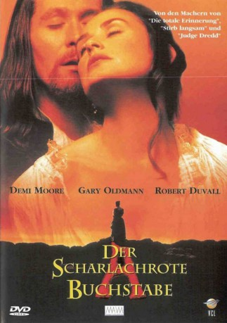
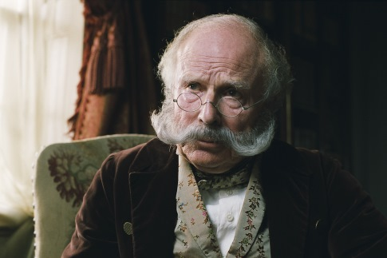
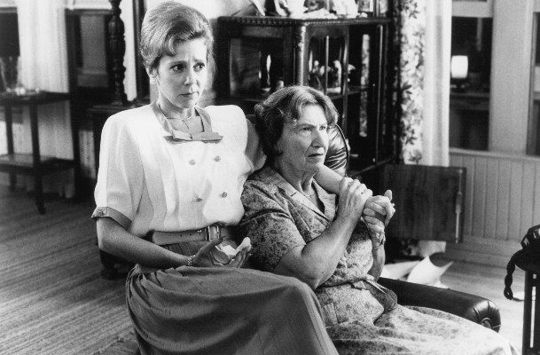

#7032 Der Scharlachrote Buchstabe
Alternativ: The Scarlet Letter
 
 IMDB-Wertung: 5.2 / 10
IMDB-Wertung: 5.2 / 10  Metascore: 0
Metascore: 0 
Drama basierend auf dem gleichnamigen Roman von Nathaniel Hawthorne. Amerika im 17. Jahrhundert: Hester Prynne reist aus England nach Massachusetts, wo sie auf ihren Ehemann wartet. Dort lässt sie sich auf eine Affäre mit dem Priester Arthur Dimmesdale ein und wird schwanger.
Jahr: 1995
Dauer: 125 Minuten
FSK: 12
Land: USA Studio: Buena Vista PicturesTonspuren:
Untertitel:
Auflösung: 1080p (1920x1080) Größe: 6696 MB
Genre: Drama, Liebe
Regisseur: Roland Joffé
Drehbuch: Nathaniel Hawthorne
Soundtrack:
Darsteller:
 Demi Moore als Hester Prynne
Demi Moore als Hester Prynne Gary Oldman als Rev. Arthur Dimmesdale
Gary Oldman als Rev. Arthur Dimmesdale Robert Duvall als Roger Chillingworth
Robert Duvall als Roger Chillingworth-  Edward Hardwicke als Gov. John Bellingham
 Robert Prosky als Horace Stonehall
Robert Prosky als Horace Stonehall Roy Dotrice als Rev. Thomas Cheever
Roy Dotrice als Rev. Thomas Cheever Joan Plowright als Harriet Hibbons
Joan Plowright als Harriet Hibbons Malcolm Storry als Maj. Dunsmuir
Malcolm Storry als Maj. Dunsmuir- Larissa Laskin als Goody Mortimer
-  Amy Wright als Goody Gotwick
 George Aguilar als Johnny Sassamon
George Aguilar als Johnny Sassamon Tim Woodward als Brewster Stonehall
Tim Woodward als Brewster Stonehall- Joan Gregson als Elizabeth Cheever
 Dana Ivey als Meredith Stonehall
Dana Ivey als Meredith Stonehall Diane Salinger als Margaret Bellingham
Diane Salinger als Margaret Bellingham- Sheldon Peters Wolfchild als Moskeegee
 Eric Schweig als Metacomet
Eric Schweig als Metacomet- Kristin Fairlie als Faith Stonehall
- Deborah Tennant als Quaker Lady
- Kateri Walker als Female Sachem
- Len Doncheff als Trader
 Jeremy Akerman als Middle Aged Passenger
Jeremy Akerman als Middle Aged Passenger- Scout Willis als Young Pearl
- Tallulah Willis als Infant Pearl
- Jodhi May als Pearl
- Lisa Andoh als Mituba
- James Bearden als Goodman Mortimer
- Jocelyn Cunningham als Mary Rollings
- Sarah Campbell als Prudence Stonehall
- Judd Jones als Mr. Bobbin
- Anthony Paton als Town Beadle
- Marguerite McNeil als Widow Wormser
- Kennetch Charlette als Tarrantine Chief
- Shaun R. Clarke als Militia Guardsman
- Jay Carmichael als Militia Guardsman
- Jason Parkhill als First Guardsman
- Jeremy Keddy als Drummer Boy
- Nicholas Rice als The Clerk
- Ashley Nolan als Goody Hunter
- Stephen Aderneck als Speaking Native
- Evelyn Francis als Algonquin Native
- Gary Joseph als Native Rider
- Stephen Micalchunk als Passenger #1
- Thomas Clair als Algonquian Warrior , uncredited
- David Kehoe als Extra , uncredited
Datei: X:\1995\Scharlachrote Buchstabe, Der (1995, FSK12, 1920x1080).mkv seit 18.09.2017
Festplatte: HD 1992-1995
 Es gibt insgesamt 85 Filme in der Gruppe '1995'
Es gibt insgesamt 85 Filme in der Gruppe '1995'